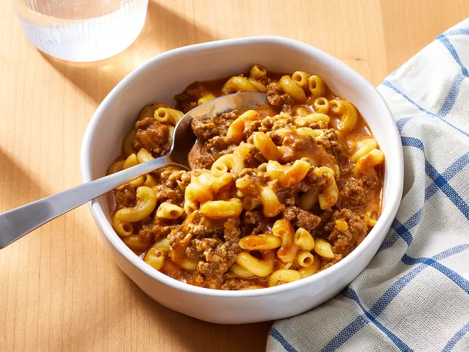

Homemade Hamburger Helper

Cheesy Mac and Burger
A family favorite of the popular hamburger helper, except homemade and healthier.
Easy to make, easy to enjoy
Ingredients
- 1 lb ground beef
- 1/2 cup diced onion
- 2 Tbsp tomato paste
- 1/2 tsp garlic powder
- 1/2 tsp chili powder
- 1/2 tsp salt
- 1/4 tsp paprika powder
- 3 1/2 cup beef broth
- 1 cup elbow macaroni
- 6 oz cheddar cheese, shredded
Directions
- Gather ingredients
- Heat a large, heavy-bottomed pot over medium-high heat. Add beef and onion,
and cook, stirring occasionally, until beef is crumbled, browned, and no
longer pink, about 7 minutes. Spoon off and discard any fat.
- Stir in tomato paste, ketchup, garlic powder, chili powder, salt, paprika,
and pepper; cook, stirring constantly, until fragrant, about 2 minutes.
- Add beef broth, and bring to a boil over high heat. Stir in macaroni; reduce
heat to medium, and gently boil, uncovered, stirring occasionally, until
pasta is tender and most of the liquid is absorbed, 13 to 15 minutes.
- Remove from heat, and stir in Cheddar, ensuring cheese is fully melted and
incorporated, 30 to 45 seconds. Let stand until thickened before serving, about
2 minutes.
Go Back